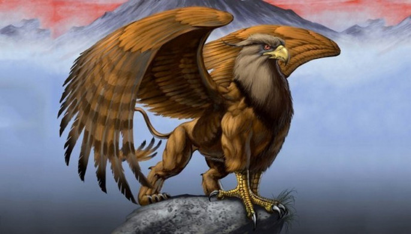

Питомцы в Аватарах существуют уже десяток лет, но до сих пор не было разбора/расчета основных формул получения опыта и ценностей в особых действиях питомцев. Эта заметка призвана разрешить это недоразумение.
Свободная охота
Отправляет питомца за опытом, пока питомец на охоте, его сытость не снижается.
- Можно отправить охотиться на 6, 8, 12, 24, 48, 96 часов. В зависимости от выбранного времени снижает Преданность питомца (для 6 и 8 часов = на 1 единицу, 12 – 2 ед. и т.д. до 96 – 5 ед.)
- Питомец вернется позже, чем выбранное время охоты истечет – чем меньше Преданность питомца при отправке на охоту, тем больше отклонение
- Формула отклонения (в секундах): СЛУЧАЙНОЕ_ЗНАЧЕНИЕ_МЕЖДУ(0, 100-Преданность)*360*k, где k – снижение Преданности при отправке питомца (из предыдущего пункта). Полученное значение прибавляется к выбранному времени отправки
- Пример 1: Преданность 90, отправляем питомца на 24 часа. Отклонение = случ(0, 100-90)*360*3 = случ(0, 10)*1080. В итоге питомец задержится на время в промежутке 0 и 10 800 секунд (до 3-х часов).
- Пример 2: Преданность 10, отправляем питомца на 96 часов. Отклонение = случ(0, 100-10)*360*5 = случ(0, 90)*1800. В итоге питомец задержится на время в промежутке 0 и 162 000 секунд (до 45-х часов).
- Питомец получает опыт по завершению охоты в соответствии с формулой:
- (k+1)^2.5 * (уровень_питомца/2) * эффект_знака_Золт * (Преданность/100), где k – снижение Преданности при отправке питомца (из предыдущего пункта), эффект_знака_Золт – дополнительные 20% опыта при активном знаке Золт на питомце
- Пример 1: Отправляем питомца 20 уровня на 96 часов на охоту, преданность 95, знака на опыт нет. Опыт = (5+1)^2.5 * (20/2) * 1 * (95/100) = 837 опыта.
- Пример 2: Отправляем питомца 1 уровня на 8 часов на охоту, преданность 10, знака на опыт нет. Опыт = (1+1)^2.5 * (1/2) * 1 * (10/100) = 0 опыта.
Можно заметить, что 6 и 8 часов отправки на охоту дают одинаковое количество опыта (так как k = 1), однако отправка на 8 часов может быть полезнее в отдельных случаях, когда необходимо подержать питомца на охоте для отключения расхода сытости дольше 6 часов.
Поиск ценностей
Отправляет питомца искать различные предметы, ценные и не очень.
- Можно отправить охотиться на 6, 8, 12, 18, 26, 36 часов. В зависимости от выбранного времени снижает Преданность питомца (для 6 и 8 часов = на 1 единицу, 12 – 2 ед. и т.д. до 36 – 5 ед.)
- Питомец вернется позже, чем выбранное время Поиска ценностей истечет – чем меньше Преданность питомца при отправке на поиск, тем больше отклонение
- Формула отклонения (в секундах): СЛУЧАЙНОЕ_ЗНАЧЕНИЕ_МЕЖДУ(0, 100-Преданность)*240*k, где k – снижение Преданности при отправке питомца (из предыдущего пункта). Полученное значение прибавляется к выбранному времени отправки
- Формула практически идентична формуле задержки при свободной охоте, только питомец в среднем будет задерживать на меньшее время (значение множителя 240 в формуле поиска ценностей, против 360 в свободной охоте)
- Питомец может принести фиксированную награду из списка с 51 предметом, список предметов с номерами в таблице ниже.
- Номер предмета из списка определяется по формуле, включающей нижнюю и верхнюю границы номера вещей:
- Верхняя граница: 3 + ОКРУГЛВВЕРХ((уровень_питомца / 3 * k + тип_питомца) * Преданность / 90) * эффект_знака_Слам, где k – снижение Преданности при отправке питомца (из предыдущего пункта), тип_питомца – тип питомца, который был отправлен на поиск ценностей (в таблице ниже)
- Нижняя граница: ОКРУГЛВНИЗ(Верхняя граница / 2)
- Пример 1: отправляем Паука 20 уровня на 36 часов, преданность 100, знака Слам на повышение эффекта Поиска ценностей нет. Верхняя граница = 3 + ОКРУГЛВВЕРХ((20 / 3 * 5 + 3) * 100 / 90) * 1 = 44. Нижняя граница = 44/2 = 22. Итого будет выбран случайный предмет из списка ниже в диапазоне номеров (22, 44). Необходимо учесть то, что номер 1 в таблице соответствует номеру 0, полученному в формуле, то есть в таблице будет выбран предмет из диапазона (23, 45). Средняя ценность – 631 серебра.
- Пример 2: отправляем Раптора 25 уровня на 36 часов, преданность 100, знак Слам на повышение эффекта Поиска ценностей есть. Верхняя граница = 3 + ОКРУГЛВВЕРХ((25 / 3 * 5 + 6) * 100 / 90) * 1.1 = 57. Так как получено значение 57 (что больше длины списка вещей), итоговое значение равно 50. Нижняя граница = 50/2 = 25. Итого будет выбран случайный предмет из списка ниже в диапазоне номеров (25, 50). Необходимо учесть то, что номер 1 в таблице соответствует номеру 0, полученному в формуле, то есть в таблице будет выбран предмет из диапазона (26, 51). Средняя ценность – 960 серебра.
- Номер предмета из списка определяется по формуле, включающей нижнюю и верхнюю границы номера вещей:
Как видно из формулы поиска ценностей, существует предел в стоимости приносимых питомцем вещей, при этом на определенном этапе (когда верхняя граница по формуле превышает максимальное допустимое значение) нет смысла прокачивать уровень питомца для повышения ценности получаемых вещей. Однако повышение уровня, использование знаков и отправка питомца с высокой преданностью позволяет достигнуть предела награды при отправке не на 36 часов, а на 26, например, что увеличивает количество получаемого серебра в час с поиска ценностей. Так, например, если во втором примере расчетов отправить Раптора не на 36 часов, а на 26, но при этом у Раптора будет 30 уровень, а не 25, то итоговая ценность приносимой питомцем вещи будет одинаковой, то есть соотношение серебро/час в данном случае вырастает на 30% за 5 уровней раптора.
Перенос вещей в Постоялый двор
Отправляет питомца с выбранной пачкой предметов и ресурсов в Постоялый двор. Время перемещения – 3 часа.
- Питомец задержится с возвращением на 120 секунд за каждую недостающую единицу преданности.
- Формула переносимого питомцем веса: (20 + (тип_питомца + 3) * 10 * уровень_питомца) * эффект_знака_Твик * Сытость / 100, где тип_питомца – по аналогии с Поиском ценностей из таблицы ниже
- Пример: Саламандра 25 уровня со знаком Твик и Сытостью 90. Переносимый вес: (20 + (6 + 3) * 10 * 25) * 1.3 * 90 / 100 = 2 656
Если исходить из отзывов некоторых шахтеров-магов, перенос предметов в Постоялый двор является очень полезной функцией питомца, позволяющей отсрочить момент, когда переносимый вес начнет увеличивать ОД на действие игрока от перевеса
| Питомец | Коэффициент типа питомца для расчета поиска ценностей и переносимого веса |
|---|---|
| Волк | 1 |
| Медведь | 2 |
| Паук | 3 |
| Кобра | 4 |
| Скорпион | 5 |
| Грифон, Саламандры, Раптор | 6 |